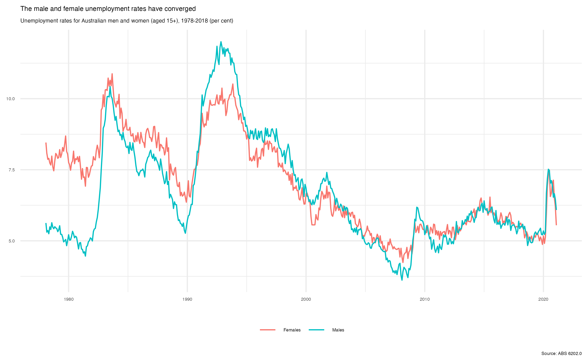

About {readabs}
The readabs package helps you work with two types of data released by the Australian Bureau of Statistics: time series spreadsheets and data cubes.
All ABS time series spreadsheets look like this – with the series in the first row, then 9 further rows of metadata, then the data.

Data cubes can look like anything – if it’s not formatted like the screenshot above, it’s a data cube.
This vignette provides information about how to use readabs to work with each of these data types.
Working with ABS time series data
One key function – read_abs() – downloads, imports, and tidies ABS time series data.
ABS time series data is messy
If you want to visualise or analyse data in R, you will often need to tidy it first. In tidy data:
- Each variable forms a column.
- Each observation forms a row.
- Each type of observational unit forms a table.
ABS time series data is not tidy. Tidying it requires a bit of work. This screenshot of an ABS time series spreadsheet shows some of the problems, namely:
- metadata and data are in the same columns;
- in some cases, the data are spread across multiple worksheets;
- each time series has its own column (it’s ‘wide’, not ‘long’); and
- dates are in an Excel format (eg.
Feb-1978is stored as28522), which is a pain to convert to an actual date.

Download, import, and tidy time series data
read_abs() is the main function of the readabs package. First, let’s load readabs and a couple of other packages we’ll use for demonstration purposes:
Getting a whole catalogue number worth of time series data
If you give read_abs() an ABS catalogue number, it will download, import and tidy all the time series spreadsheets from that catalogue number. Easy!
For example, to get all the spreadsheets from the Wage Price Index, catalogue number 6345.0, we’d do:
wpi <- read_abs("6345.0")Cool! Now we’ve got a data frame (a tibble, to be precise) that contains all the time series from the Wage Price Index, converted to long and stacked on top of each other. Here’s what it looks like:
head(wpi)
#> # A tibble: 6 × 12
#> table_no sheet_no table_title date series value series_type data_type
#> <chr> <chr> <chr> <date> <chr> <dbl> <chr> <chr>
#> 1 634501 Data1 Table 1. Tota… 1997-09-01 Quart… 67.4 Original INDEX
#> 2 634501 Data1 Table 1. Tota… 1997-09-01 Quart… 64.7 Original INDEX
#> 3 634501 Data1 Table 1. Tota… 1997-09-01 Quart… 66.7 Original INDEX
#> 4 634501 Data1 Table 1. Tota… 1997-09-01 Quart… 67.3 Seasonally… INDEX
#> 5 634501 Data1 Table 1. Tota… 1997-09-01 Quart… 64.8 Seasonally… INDEX
#> 6 634501 Data1 Table 1. Tota… 1997-09-01 Quart… 66.6 Seasonally… INDEX
#> # … with 4 more variables: collection_month <chr>, frequency <chr>,
#> # series_id <chr>, unit <chr>It’s over 54 000 rows long, and 12 variables wide. Some catalogue numbers are much bigger - for example, if you get the entire monthly Labour Force release (catalogue number 6202.0), you’ll have a data frame with well over 2 million rows.
All the metadata from the time series spreadsheets is included in the data frame:
-
table_titleis the title of the table; -
dateis the date of the observation in that row; -
seriesis the name of the individual time series - in the ABS spreadsheet this is in the first row; -
valueis the observation, the actual data; -
series_typecan be ‘Original’, ‘Seasonally Adjusted’, or ‘Trend’; -
data_typetells us whether this is an index number, a ‘stock’, a ‘flow’, expressed as a ‘percent’, etc.; -
collection_monthtells us (for quarterly or annual data) which month the data was collected; -
frequencytells us the frequency of the time series; -
series_idis a unique identifier given by the ABS to each time series; and -
unittells us the unit of measurement, such as ‘000s’, ‘Index Numbers’, ‘Percent’ or ‘000 hours’.
The table_no and sheet_no columns will help you if you need to cross-check information on the ABS spreadsheet - table_no matches the filename of the spreadsheet (eg. ‘634501.xls’) and sheet_no is the name of the Excel worksheet within the file that contains the time series.
Get individual table(s)
Unless you tell it otherwise, read_abs() will get all the time series spreadsheets from a given catalogue number.
Generally this will be overkill. Maybe you don’t want all ~2.1 million rows of Labour Force data; perhaps you know that the time series you need is in table 1. In that case you can use the tables argument to read_abs() to specify the table(s) you want:
lfs_1 <- read_abs("6202.0", tables = 1)
head(lfs_1)
#> # A tibble: 6 × 12
#> table_no sheet_no table_title date series value series_type data_type
#> <chr> <chr> <chr> <date> <chr> <dbl> <chr> <chr>
#> 1 6202001 Data1 Table 1. Labo… 1978-02-01 Emplo… NA Trend STOCK
#> 2 6202001 Data1 Table 1. Labo… 1978-02-01 Emplo… 5998. Seasonally… STOCK
#> 3 6202001 Data1 Table 1. Labo… 1978-02-01 Emplo… 5986. Original STOCK
#> 4 6202001 Data1 Table 1. Labo… 1978-02-01 Emplo… NA Trend STOCK
#> 5 6202001 Data1 Table 1. Labo… 1978-02-01 Emplo… 3881. Seasonally… STOCK
#> 6 6202001 Data1 Table 1. Labo… 1978-02-01 Emplo… 3887. Original STOCK
#> # … with 4 more variables: collection_month <chr>, frequency <chr>,
#> # series_id <chr>, unit <chr>If you want more than one table, but not the whole catalogue number, you can specify multiple tables:
head(lfs_1_5)
#> # A tibble: 6 × 12
#> table_no sheet_no table_title date series value series_type data_type
#> <chr> <chr> <chr> <date> <chr> <dbl> <chr> <chr>
#> 1 6202001 Data1 Table 1. Labo… 1978-02-01 Emplo… NA Trend STOCK
#> 2 6202001 Data1 Table 1. Labo… 1978-02-01 Emplo… 5998. Seasonally… STOCK
#> 3 6202001 Data1 Table 1. Labo… 1978-02-01 Emplo… 5986. Original STOCK
#> 4 6202001 Data1 Table 1. Labo… 1978-02-01 Emplo… NA Trend STOCK
#> 5 6202001 Data1 Table 1. Labo… 1978-02-01 Emplo… 3881. Seasonally… STOCK
#> 6 6202001 Data1 Table 1. Labo… 1978-02-01 Emplo… 3887. Original STOCK
#> # … with 4 more variables: collection_month <chr>, frequency <chr>,
#> # series_id <chr>, unit <chr>Get time series using their IDs
Every ABS time series has a unique identifier. If you know the ID for the time series you need, you can supply it to the series_id argument to read_abs(). You can give it a single ID, or multiple IDs.
For example, the time series ID for the number of employed people in Australia (trend) is "A84423127L". We can get a data frame that only contains that series as follows:
employed <- read_abs(series_id = "A84423127L")
head(employed)
#> # A tibble: 6 × 12
#> table_no sheet_no table_title date series value series_type data_type
#> <chr> <chr> <chr> <date> <chr> <dbl> <chr> <chr>
#> 1 6202001 Data1 Table 1. Labo… 1978-02-01 Emplo… NA Trend STOCK
#> 2 6202001 Data1 Table 1. Labo… 1978-03-01 Emplo… NA Trend STOCK
#> 3 6202001 Data1 Table 1. Labo… 1978-04-01 Emplo… NA Trend STOCK
#> 4 6202001 Data1 Table 1. Labo… 1978-05-01 Emplo… NA Trend STOCK
#> 5 6202001 Data1 Table 1. Labo… 1978-06-01 Emplo… NA Trend STOCK
#> 6 6202001 Data1 Table 1. Labo… 1978-07-01 Emplo… NA Trend STOCK
#> # … with 4 more variables: collection_month <chr>, frequency <chr>,
#> # series_id <chr>, unit <chr>
unique(employed$series)
#> [1] "Employed total ; Persons ;"A benefit of this approach is that the filtering is done for you - the data frame only contains the series you’re interested in.
Use separate_series() to work with your time series data
The series column of a table imported using read_abs() often contains a long, multi-part string, as this is how the ABS labels its series. This is where the separate_series() function comes in handy.
In this example, we’ll work with data from the Labour Force survey that we downloaded and tidied earlier using read_abs().
Now let’s have a look at the time series from table 1 of the Labour Force survey:
unique(lfs_1$series)
#> [1] "Employed total ; Persons ;"
#> [2] "Employed total ; > Males ;"
#> [3] "Employed total ; > Females ;"
#> [4] "> Employed full-time ; Persons ;"
#> [5] "> Employed full-time ; > Males ;"
#> [6] "> Employed full-time ; > Females ;"
#> [7] "> Employed part-time ; Persons ;"
#> [8] "> Employed part-time ; > Males ;"
#> [9] "> Employed part-time ; > Females ;"
#> [10] "Employment to population ratio ; Persons ;"
#> [11] "Employment to population ratio ; > Males ;"
#> [12] "Employment to population ratio ; > Females ;"
#> [13] "Unemployed total ; Persons ;"
#> [14] "Unemployed total ; > Males ;"
#> [15] "Unemployed total ; > Females ;"
#> [16] "> Unemployed looked for full-time work ; Persons ;"
#> [17] "> Unemployed looked for full-time work ; > Males ;"
#> [18] "> Unemployed looked for full-time work ; > Females ;"
#> [19] "> Unemployed looked for only part-time work ; Persons ;"
#> [20] "> Unemployed looked for only part-time work ; > Males ;"
#> [21] "> Unemployed looked for only part-time work ; > Females ;"
#> [22] "Unemployment rate ; Persons ;"
#> [23] "Unemployment rate ; > Males ;"
#> [24] "Unemployment rate ; > Females ;"
#> [25] "> Unemployment rate looked for full-time work ; Persons ;"
#> [26] "> Unemployment rate looked for full-time work ; > Males ;"
#> [27] "> Unemployment rate looked for full-time work ; > Females ;"
#> [28] "> Unemployment rate looked for only part-time work ; Persons ;"
#> [29] "> Unemployment rate looked for only part-time work ; > Males ;"
#> [30] "> Unemployment rate looked for only part-time work ; > Females ;"
#> [31] "Labour force total ; Persons ;"
#> [32] "Labour force total ; > Males ;"
#> [33] "Labour force total ; > Females ;"
#> [34] "Participation rate ; Persons ;"
#> [35] "Participation rate ; > Males ;"
#> [36] "Participation rate ; > Females ;"
#> [37] "Not in the labour force (NILF) ; Persons ;"
#> [38] "Not in the labour force (NILF) ; > Males ;"
#> [39] "Not in the labour force (NILF) ; > Females ;"
#> [40] "Civilian population aged 15 years and over ; Persons ;"
#> [41] "Civilian population aged 15 years and over ; > Males ;"
#> [42] "Civilian population aged 15 years and over ; > Females ;"There’s a bunch of data in here. We can see that the series column contains a first part, like “Participation rate” or “Unemployment rate”, and a second part, which is “Persons”, “Males”, or “Females”. You will often want to filter using one or both of these components separately - and sometimes there will be more than two components.
The separate_series function helps you by separating the series column into multiple components and removing extraneous symbols.
lfs_1_sep <- lfs_1 %>%
separate_series()
#> Warning in separate_series(.): value column(s) have NA values.
lfs_1_sep %>%
group_by(series_1, series_2) %>%
summarise()
#> `summarise()` has grouped output by 'series_1'. You can override using the
#> `.groups` argument.
#> # A tibble: 42 × 2
#> # Groups: series_1 [14]
#> series_1 series_2
#> <chr> <chr>
#> 1 Civilian population aged 15 years and over Females
#> 2 Civilian population aged 15 years and over Males
#> 3 Civilian population aged 15 years and over Persons
#> 4 Employed full-time Females
#> 5 Employed full-time Males
#> 6 Employed full-time Persons
#> 7 Employed part-time Females
#> 8 Employed part-time Males
#> 9 Employed part-time Persons
#> 10 Employed total Females
#> # … with 32 more rowsThe remove_totals and remove_nas arguments to separate_series() can be very useful when you are tidying data. They’re both set to FALSE by default.
We’ve now got a new tibble that still contains the original series column, but also contains new columns series_1 and series_2, with the two parts of series split into these new columns.
Let’s make a data frame that just contains the male and female unemployment rates over time.
unemp <- lfs_1_sep %>%
filter(series_1 == "Unemployment rate")
unique(unemp$series_1)
#> [1] "Unemployment rate"
unique(unemp$series_2)
#> [1] "Persons" "Males" "Females"Now we have a data frame, unemp, that contains various unemployment rate series. Let’s filter to only Males or Females.
unemp <- unemp %>%
filter(series_2 %in% c("Males", "Females"))
unique(unemp$series_2)
#> [1] "Males" "Females"Now our data frame only contains the male and female unemployment rates, which is what we want. Let’s graph it, filtering once more to show only the seasonally adjusted series and adding a ‘sex’ column:
unemp %>%
filter(series_type == "Seasonally Adjusted") %>%
mutate(sex = series_2) %>%
ggplot(aes(x = date, y = value, col = sex)) +
geom_line() +
theme_minimal() +
theme(legend.position = "bottom",
axis.title = element_blank(),
legend.title = element_blank(),
text = element_text(size = 5)) +
labs(title = "The male and female unemployment rates have converged",
subtitle = "Unemployment rates for Australian men and women (aged 15+), 1978-2018 (per cent)",
caption = "Source: ABS 6202.0")
Ta-da! Now we’ve got a nice little graph - and you didn’t need to go to the ABS website or click around in Excel.
Importing and tidying local time series spreadsheets
If you already have ABS time series spreadsheets saved locally that you want to read, the read_abs_local() function is what you want.
If you’ve downloaded files using read_abs(), you can import them using read_abs_local() by specifying the catalogue number. This will look in the subdirectory of path that corresponds to cat_no:
lfs_local_1 <- read_abs_local("6202.0")The data frame you’ll get will look the same as if you’d used read_abs() to get the spreadsheet(s) from the ABS website.
Working with ABS data cubes
All ABS time series spreadsheets are alike. Each ABS data cube is formatted in its own unique way.
There is no data cube equivalent of the read_abs() function that will download, import, and tidy any data cube for you. But download_abs_data_cube() can download any data cube, for you to then manually import and tidy. Use show_available_catalogues() to see all the possible catalogues, search_catalogues() to find catalogues that contain a given string (in the catalogue name itself, or the topic). Similarly, use show_available_files() to find all the filenames in a given catalogue, or search_files() to look for filenames within a catalogue that contain a particular string.
Convenience functions - read_payrolls() and read_lfs_grossflows() are included to download, import, and tidy particular commonly-used data cubes.
Download data cubes
Any ABS data cube can be downloaded using the download_abs_data_cube() function. You need to specify the name of the catalogue (catalogue_string), and the filename (in whole or unique part) of the file you want to download (cube).
Let’s say I want to download cube GM1, the gross flows spreadsheet from the monthly Labour Force release.
Let’s look for the name of the catalogue:
search_catalogues("labour force")#> # A tibble: 6 × 4
#> heading sub_heading catalogue url
#> <chr> <chr> <chr> <chr>
#> 1 Employment and unemployment Labour Force, Australia labour-f… http…
#> 2 Employment and unemployment Labour Force, Australia, Detailed labour-f… http…
#> 3 Employment and unemployment Labour Force Status of Families labour-f… http…
#> 4 Employment and unemployment Barriers and Incentives to Labour… barriers… http…
#> 5 Employment and unemployment Labour Force, Australia, Detailed… labour-f… http…
#> 6 Employment and unemployment Labour Force, Australia - Rebench… labour-f… http…It looks like labour-force-australia is the catalogue name for the monthly Labour Force survey.
Now I need to find the filename for the gross flows spreadsheet, GM1.
search_files("GM1", "labour-force-australia")#> [1] "GM1.xlsx"The GM1 table is, conveniently enough, called GM1.xlsx.
So we can download it like this:
gm1_path <- download_abs_data_cube("labour-force-australia", "GM1")
print(gm1_path)Now we have an Excel sheet saved at that path, which you can import using readxl::read_excel() or the Excel-reading function of your choice.
Download, import and tidy key data cubes
For most data cubes, you’ll need to write your own code to import and tidy the data. But for some key cubes, convenience functions are provided.
Labour force gross flows
The labour force gross flows cube is one of the cubes for which readabs includes a convenience function, read_lfs_grossflows().
gf <- read_lfs_grossflows()Now we have a tidy tibble of the Labour Force gross flows data:
head(gf)
#> # A tibble: 6 × 9
#> date sex age state lfs_current lfs_previous persons unit weights
#> <date> <chr> <chr> <chr> <chr> <chr> <dbl> <chr> <chr>
#> 1 2001-03-01 Males 15-19 y… New … Employed f… Employed fu… 28.5 000s curren…
#> 2 2001-03-01 Males 15-19 y… New … Employed f… Employed pa… 1.93 000s curren…
#> 3 2001-03-01 Males 15-19 y… New … Employed f… Unemployed 2.93 000s curren…
#> 4 2001-03-01 Males 15-19 y… New … Employed f… Not in the … 0.334 000s curren…
#> 5 2001-03-01 Males 15-19 y… New … Employed f… Unmatched i… 1.63 000s curren…
#> 6 2001-03-01 Males 15-19 y… New … Employed f… Incoming ro… 7.57 000s curren…ABS Weekly Payroll Jobs and Wages
The ABS Weekly Payroll Jobs and Wages release contains a range of useful information. Even though this release contains time series data, the ABS does not release it in its standard time series spreadsheet format, and read_abs() therefore cannot import it. The read_payrolls() function can be used instead.
Let’s say you want to download the jobs figures, as index numbers, for each geographical area (SA3) over time. That’s straightforward with read_payrolls():
payrolls <- read_payrolls()Here’s what we’ve got:
head(payrolls)
#> # A tibble: 6 × 6
#> state sa4 sa3 date value series
#> <chr> <chr> <chr> <date> <dbl> <chr>
#> 1 NSW Capital Region Queanbeyan 2020-01-04 92.6 jobs
#> 2 NSW Capital Region Queanbeyan 2020-01-11 95.2 jobs
#> 3 NSW Capital Region Queanbeyan 2020-01-18 97.1 jobs
#> 4 NSW Capital Region Queanbeyan 2020-01-25 97.2 jobs
#> 5 NSW Capital Region Queanbeyan 2020-02-01 98.0 jobs
#> 6 NSW Capital Region Queanbeyan 2020-02-08 98.8 jobsChoosing where ABS data is saved
The read_abs() function downloads spreadsheets from the ABS website to your machine, then loads them into R, then tidies them.
By default, the spreadsheets will be saved in the directory specified by the environment variable R_READABS_PATH. If this variable isn’t set, the spreadsheets are saved to a temporary directory. You can change this location for a specific instance by using the path argument to read_abs().
Keeping the spreadsheets is often a good idea. But if you don’t want to retain them, no problem. Just specify retain_files = FALSE when you use read_abs(). The spreadsheets will still be downloaded, but they’ll be stored in a temporary directory that is flushed when your R session ends.